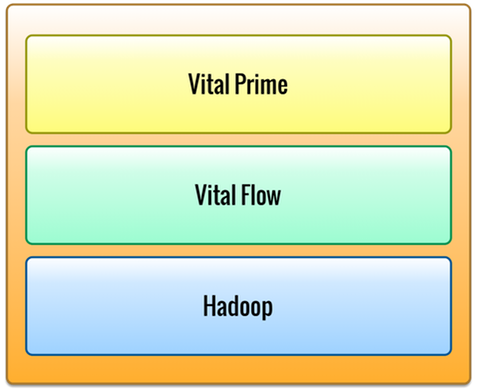

Vital AI Service

The Vital AI Platform is implemented using the Vital AI Service, which
consists of 3 primary layers: Vital Prime, Vital Flow, and Hadoop.
Vital Prime provides in-memory data storage and analysis. Vital Flow
provides data processing via multi-step data flows which may include steps
for text processing, graph analysis, machine learning, logical inference,
integration with social networks, and integration with other external APIs. Hadoop provides long term storage of data via HDFS and HBase and analysis via Map/Reduce jobs.